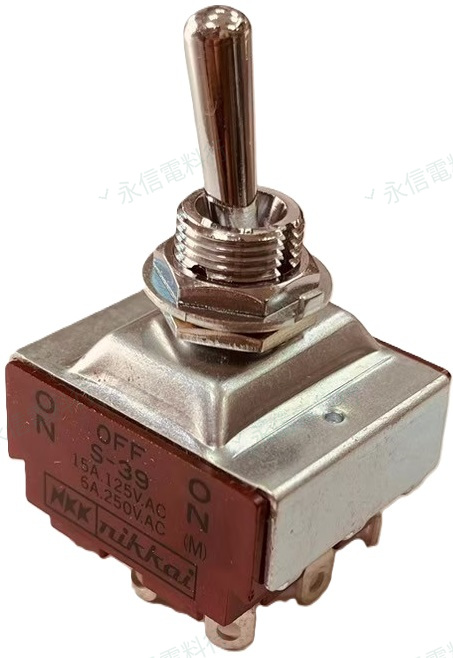
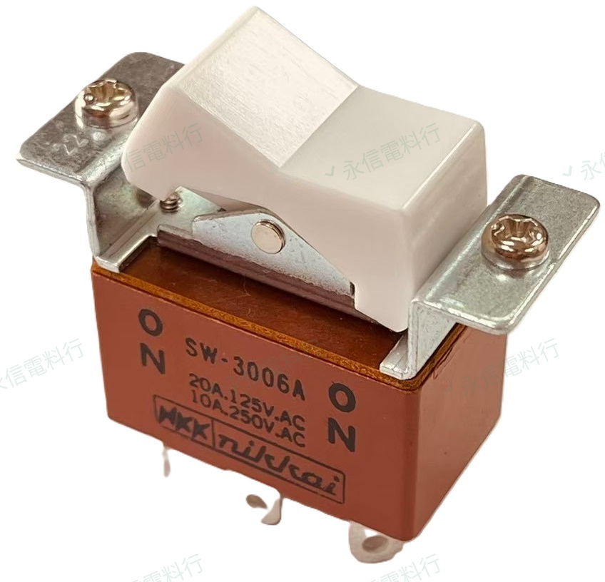

BRAND PRODUCT INDEX
NKK Switches
目前網站已建立 NKK S／S300 搖頭開關與 SW 翹板開關商品頁，依操作形式與完整型號分組，方便維修替換時核對。
 10 個商品頁2 種產品類型
10 個商品頁2 種產品類型AVAILABLE PRODUCT SERIES
已建立商品系列
目前先依「搖頭開關」與「翹板開關」分組；後續新增 NKK 其他開關類型時，可再建立新的系列卡片。

8 個商品頁NKK SWITCHES
NKK SWITCHESS／S300 搖頭開關
包含 SPDT、DPDT、3PDT、4PDT 與固定／復歸等不同切換形式。
查看全部搖頭開關 →
2 個商品頁NKK SWITCHES
NKK SWITCHESSW 翹板開關
目前建立 SW-3006A 固定 ON-ON 與 SW-3008A 雙側復歸型。
查看全部翹板開關 →品牌與供應說明
品牌 Logo 僅用於商品辨識，不代表永信電料行為 NKK Switches 官方授權代理商。實際供應狀況、價格與交期請依完整型號另行確認。